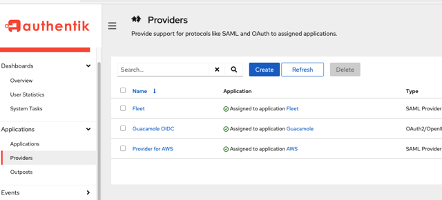
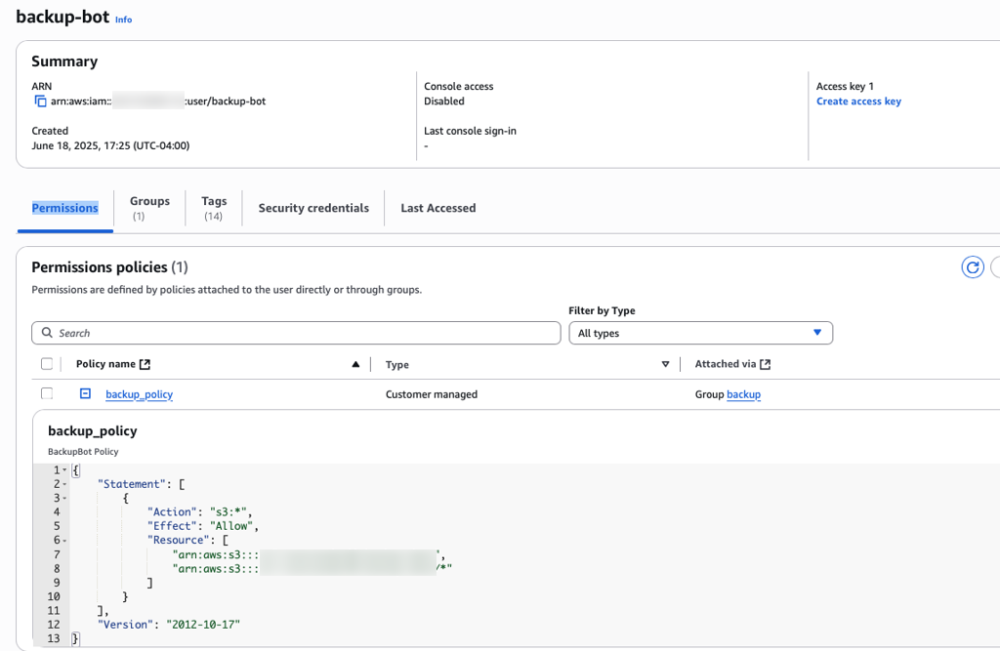
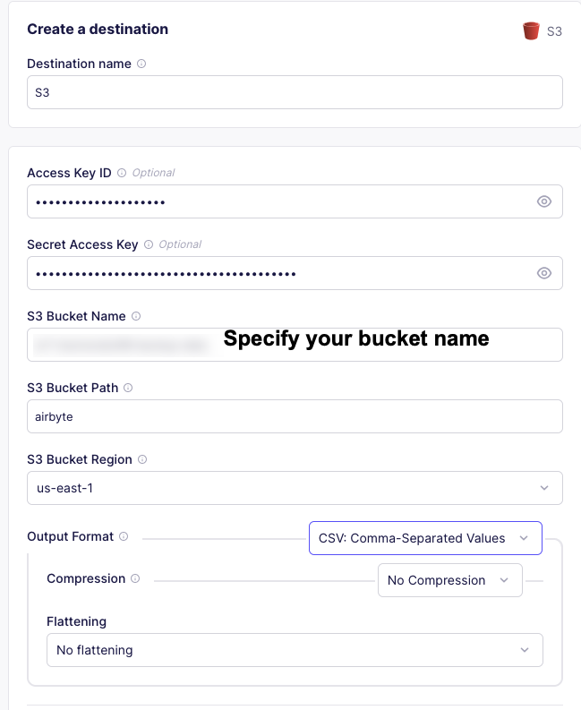
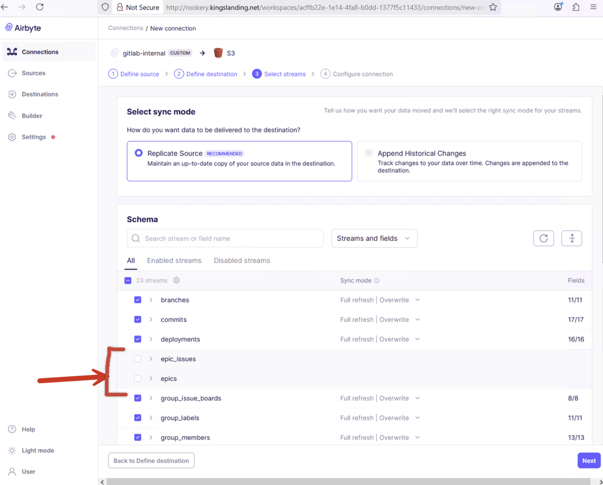

#
Post-Deployment
After configuring the Enterprise 2025 infrastructure, the following manual steps are required.
Post-Deployment Authentik Setup Procedure
Airbyte Setup Procedure Setup Connectors Setup Connections Gitlab-to-S3 Connection Wekan-to-S3 Connection
#
Authentik Setup
Authentik requires manual actions to complete setup. The procedure in this section must be done twice, once each for:
- Detections on
kingslanding.net - Protections on
vale.net
#
Procedure
Please use the following admin credentials for the Authentik SSO service:
- Open a web browser to the Authentik SSO URL, logon with the
akadminadmin credentials, then select the Admin interface (top right corner). Navigate to Applications > Providers

Applications > Providers If Provider for AWS is missing, please either rerun the
update-authentik-postdeploy.ymlor thedeploy2Make target that contains this playbook.- Click into Provider for AWS
- Under Metadata, select Download
- Logon to the AWS account of the domain being configured (Detections for Kingslanding, Protections for Vale)
- Navigate to IAM > Access Management > Identity Providers
- Select Add Provider
- Name this provider
authentik- If this is named anything other than
authentik, this configuration will not work.
- If this is named anything other than
- Under Metadata document, select Choose File
- Upload the Metadata file downloaded from the Authentik SSO dashboard (Step 4), then select Add provider.
#
Airbyte Setup
The S3 destination is a per-range configuration that must be added post-deployment.
Note that this section refers to the Detections account associated with the kingslanding domain.
#
Procedure
#
Setup Connectors
- Open a web browser, navigate to the Airbyte URL, and logon with the local admin credentials above.
- On the left menu, select Destinations
- Choose S3
- Open a new tab to logon to the Detections AWS account
- Navigate to IAM > Access Management > Users
Select the
backup-botuser.
The
backup-botuser and the correct permissions are created with Terraform. If they do not exist, check the Terraform state for this range. Do not manually change, delete, or create thebackup-botuser or permissions.- Click Create access key
- Select Other from the list of use cases and hit Next
- Type
airbyteinto the Description tag value and select Create access key - Copy the Access Key ID, return to the Airbyte tab, and paste this in the Access Key ID field.
- Copy the Secret Access Key, return to the Airbyte tab, and paste this in the Secret Access Key field.
Please validate and set the remaining fields using the table below:
- Select Set up destination. If tests do not pass, validate the bucket name and keys.

#
Create Custom Sources
Setup custom source connectors for Airbyte to use for connections to GitLab and Wekan.
#
Wekan Source
By default, Wekan only supports using MongoDB deployments in a clustered, replica set configuration. Wekan requires a specific version of the MongoDB source connector to pull data from a non-clustered database (single instance, no replica set).
- Open a web browser, navigate to the Airbyte URL, and logon with the local admin credentials above.
- Settings → Sources.
- Select
New Connector→Add a new Docker connector. Set the new connector fields using the table below:
- Select
Add. Set the new source fields using the table below:
- Select
Test the sourceand validate the connection tests are successful.
Note: These values are set in the vars in wekan.yml If validation fails, check the values and retry.
#
Gitlab Source Container
The Gitlab source connector container does not support custom certificates. To use a custom certificate (such as self-signed), the Gitlab source connector container must be modified to include and trust the certificate authority used on the evaluation range.
- SSH to the Airbyte host. Open two separate terminal windows.
- In one terminal, launch a copy of the official Airbyte gitlab-source container
docker run --name testgitlab --rm --entrypoint="" -it -u root airbyte/source-gitlab /bin/bash - In a second terminal, load the range root certificate into the container.
docker cp /usr/local/share/ca-certificates/COUNCILCA.crt $(docker ps --filter "name=testgitlab" --format "{{.ID}}"):/usr/local/share/ca-certificates/ - In the container (first terminal), run
update-ca-certificates - In the container (first terminal), add the cert to the python certifi store
cat /usr/local/share/ca-certificates/COUNCILCA.crt >> /usr/local/lib/python3.11/site-packages/certifi/cacert.pem - On the host (second terminal), save updated image
docker commit $(docker ps --filter "name=testgitlab" --format "{{.ID}}") rookery.kingslanding.net/source-gitlab:1 - On the host (second terminal), push the updated image to the internal registry.
docker push rookery.kingslanding.net/source-gitlab:1
#
Gitlab Source Connector
To build a custom source from the updated gitlab container:
- Open a web browser, navigate to the Airbyte URL, and logon with the local admin credentials above.
- Settings → Sources.
- Select
New Connector→Add a new Docker connector. Set the new connector fields using the table below:
- Select
Add. Set the new source fields using the table below:
- Select
Test the sourceand validate the connection tests are successful.
#
Setup Connections
Setup sync tasks for GitLab and Wekan → S3 using Airbyte.
#
Gitlab-to-S3 Connection
- Connections → New Connection.
- Select
gitlab-internalsource. - Select S3 destination.
- Wait for schema fetch.
Select all except for Epics.
- Deselect
epics - Deselect
epic_issues

- Deselect
- Click Next.
- Click “Finish and Sync”. Defaults are fine.
#
Wekan-to-S3 Connection
- Connections → New Connection.
- Select
mongo-legacysource. - Select S3 destination.
- Wait for schema fetch.
- Select all.
- Click Next.
- Click “Finish and Sync”. Defaults are fine.